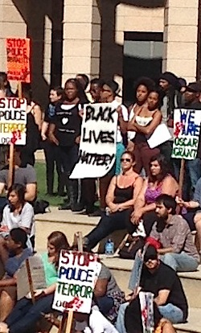
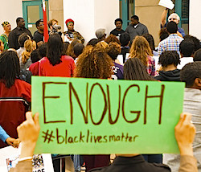

Friends,
Our heart continues to ache.
Popular resistance continues in Ferguson, Missouri, 11 days following the apparent murder of Michael Brown, an unarmed 18-year old man by Ferguson police officer Darren Wilson. The militarized police presence has too-often been quick to violence, causing more so than preventing isolated acts of destruction.
The vast majority of thousands who have protested have been peaceful. People, especially African-Americans, are understandably angry and committed to seeing justice pursued after police have killed yet one more Black man without -- it seems, despite assurances from Attorney General Eric Holder and President Obama -- anyone being held to consequence for the violence.
The confrontation has put before Missouri and the world (despite our society's inclination to ignore it) the festering issue of institutional racism, bore by our African-American brothers and sisters over the past few hundred years.
One of the most blatant examples of such racism is the death penalty. Earl Ringo's case provides a textbook case of the bigotry rampant throughout Missouri. Convicted of a Columbia murder, Missouri officials plan to execute him on Sept. 10.
Below, you'll find means to help promote criminal and social compassionate justice inviting you to: 1) TODAY at 6:00 pm, attend a Columbia protest of Mike Brown's shooting, demanding police accountability, at the Boone County Courthouse Plaza; 2) Work to halt the execution of Earl Ringo set for Sept. 10 (statewide events); 3) Attend a March of Remembrance for Michael Brown next Wednesday at 5:00 pm on the MU campus in Columbia; 4) Sign on to a petition U.S. officials to stop giving military equipment to law enforcement agencies.
Read on and take action!
TODAY at 6 pm, Attend Columbia protest of Mike Brown's shooting
Join the Missouri National Association for the Advancement of Colored People and allied groups in remembering Michael Brown and demanding police accountability.
Concerned citizens will gather today at 6:00 pm in the Boone County Courthouse Plaza. (View map and directions from Google.)
Please join as you can -- sorry for the very late notice -- and invite others to help push for change!
Take action to help halt the Sept. 10 state murder of Earl Ringo
Contact Gov. Jay Nixon's office. Urge him to stay the execution and commute his death sentence.
Call 573-751-3222; write/type a letter via e-mail, fax 573-751-1495, or tweet him @GovJayNixon.
Contact Attorney General Chris Koster's office. Urge the AG to cease his push for executing Mr. Ringo and the other 40 people living under a death sentence in Missouri. Let his workers know that you oppose the death penalty and he wins no political support from you with his push for still killing. Koster seems to think such advocacy will help pave the way for him to become the next Missouri governor. He needs to know there's popular opposition to such actions.
Call 573-751-3321, write: PO Box 899, Jefferson City MO 652101 or e-mail attorney.general@ago.mo.gov.
Earl Ringo, Jr. did shoot and kill Dennis Poyser during the robbery of the Ruby Tuesday restaurant on Stadium Blvd. An accomplice to the crimes, Quentin Jones, Jr., shot and killed JoAnna Baysinger. We condemn the violence, mourn the deaths and extend condolences to the children (now grown) who lived without their parents, and all whose lives were devastated by the violence.
Issues to consider:
- First and foremost, Earl Rigno is a person with a human right to life!
- The execution is racist, arbitrary and politically motivated.
- Mr. Jones cooperated with prosecutors in testifying against Mr. Ringo and thus evaded a death sentence (getting a life sentence instead). Mr. Ringo (who's Black as is Jones) was convicted by an all-White jury before a White prosecutor and judge of killing Mr. Poyser.
- Both he and Ms. Baysinger were White. Mr. Ringo is among at least a half dozen Blacks in Missouri, sentenced to death by an all-White jury.
- These cases -- like Michael Brown's killing -- show us that the value of life in the U.S. and Missouri justice system is too often dictated by the race of the victim with greater value placed on White than Black lives. More than 60% of all homicide victims in Missouri the past few decades were African-Americans, though constituting less than 15% of the state's population. Meanwhile, more than 76% -- 59 of the 77 men executed since 1989 -- were convicted of killing Whites.
- Why the disparity? A national study found that as of 1998, every one of the 115 county prosecutors in Missouri -- the individuals deciding which homicides to pursue with death sentences -- were White (Pakorak, St. Mary's Law University). Not a single one was African-American. We tend to empathize more easily with individuals like ourselves.
- Well under 2% of all homicides in Missouri end up in a death sentence -- though recent studies by St. Louis University researches found that state law with its broad set of aggravating factors (at least one is necessary in the crime's commission to make it death-sentenced eligible) makes more than 90% of murders qualify for the ultimate punishment.
- Kevin Crane, the former Boone County prosecutor who elected to pursue death penalty in this case, did so in several others, including at least four other African-American men also sentenced to death. Courts overturned death sentences in two of them. He seems to have parlayed the prosecutions into a political climb to higher office: he is now one of the circuit court judges.
Attend vigils for life remembering all murder victims and urging no more state murders, Tuesday, Sept. 9
Jefferson City
- 12 Noon-1:00 -- Vigil outside the governor's office, second floor of the Capitol. To car-pool from Columbia, meet 11 am in Clover's Grocery parking lot, East Broadway, just east of Old Hwy 63; call 573-449-4585 for more details.
- 4:00 pm -- Prayer service, St. Peter's Chapel on Broadway St.
- 4:30-5:30 pm -- Vigil across from the Supreme Court Building at 207 West High Street. For more information on either of the two gatherings, call 573-301-3529.
Bonne Terre
- 11:00pm on the 9th until after the execution at midnight. Some will carpool from the St. Louis vigil to this one. A candlelight vigil will be held outside the prison where the execution takes place, 2727 Highway K. For more information email stlouis@madpmo.org, or call Margaret on 314-322-5159.
Columbia
- 5:00-6:00 pm -- Vigil at Boone County Courthouse, Walnut St..
Joplin
- 6:00 pm -- St. Peter the Apostle Church. Mass begins at 6, followed by continued prayer regarding the execution from 6.30pm to 7pm. Contact Fr J. Friedel for more information, at 417-623-8643.
Kansas City
- 5:00 pm -- JC Nichols Fountain on the Plaza. For more info contact 816-206-8692.
Springfield
- 12:00 noon -- Park Central Square. For more information call Donna, 417-459-2960.
St. Joseph
- 4:30 pm -- at the intersection of Belt & Frederick. Contact Jean at 816-671-9281 for more info.
St. Louis
- 8:00-9:00 pm -- Vigil on the steps of St. Francis Xavier Church at the corner of Grand and Lindell.
- 9:00 pm -- A group will carpool to Bonne Terre to hold vigil outside the prison until after the scheduled execution time (see above). For more information email stlouis@madpmo.org, or call Margaret on 314-322-5159.
St. Peters
- 7:00 pm -- Vigil at All Saints Parish at the Peace Pole Pavillion. 7 McMenamy Drive, St. Peters, MO. For more information contact John, 636-397-1440 x227.
Attend a March of Remembrance for Michael Brown next Wednesday at 5:00 pm on the MU campus, Columbia
The Legion of Black Collegians and the MU Black Culture Center invite all concerned individuals to attend a March of Remembrance for Michael Brown next Wednesday, Aug. 27, at 5:00 pm.
Folks will gather at the amphitheater on the MU campus in Columbia, behind the Responsibility, Respect, and Discovery residential halls just off Virginia Ave. in front of the Gaines Oldham Black Culture Center.
Urge U.S. officials to stop militarizing police departments across the country
Sign on to a petition from CodePink urging both Sec. of the Dept. of Homeland Security Jeh Johnson and Department of Defense Sec. Chuck Hagel:
Thank you for taking action!
With best wishes and in solidarity for nonviolent struggle for positive change,
Jeff Stack, coordinator
Mid-MO FOR
573-449-4585
Images: George Kelly, Light Brigading, Marsmettn Tallahassee (Creative Commons licenses). |